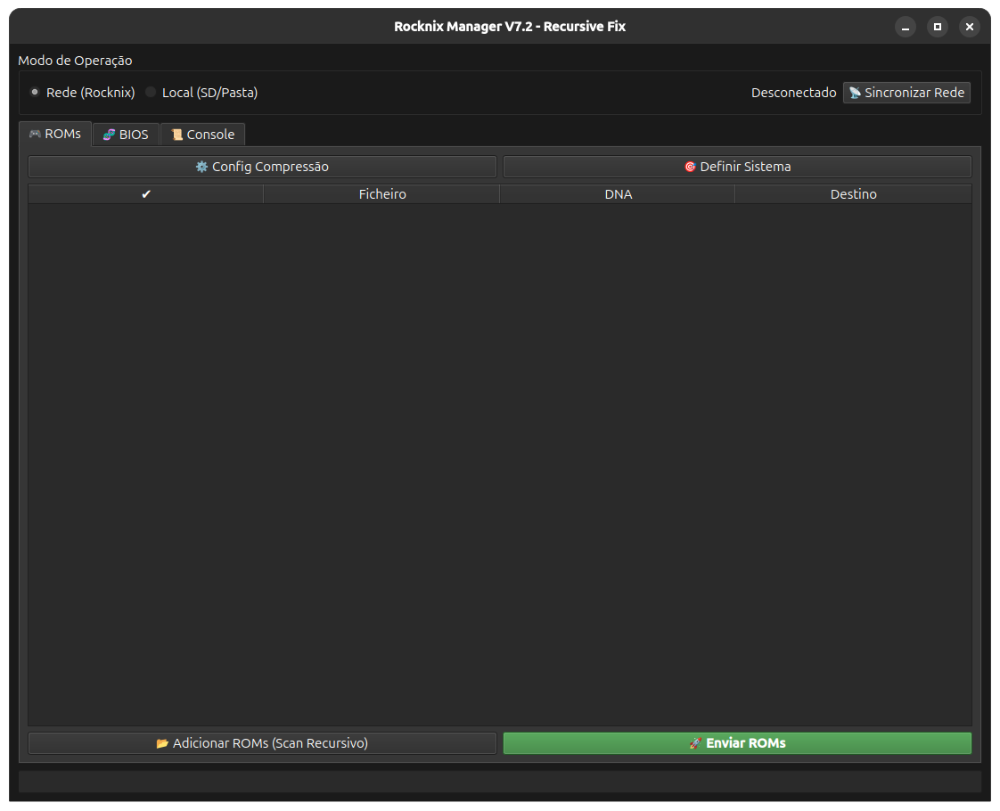

A ferramenta multiplataforma definitiva para o seu dispositivo Rocknix.

Compatível com Windows 10 e 11.
Funciona na maioria das distros.
Suporte para Intel e Apple Silicon.
Windows: Execute o .exe diretamente.
Linux: Use chmod +x no terminal para rodar o AppImage.
macOS: Clique com o botão direito e selecione 'Abrir' para ignorar o aviso de segurança.